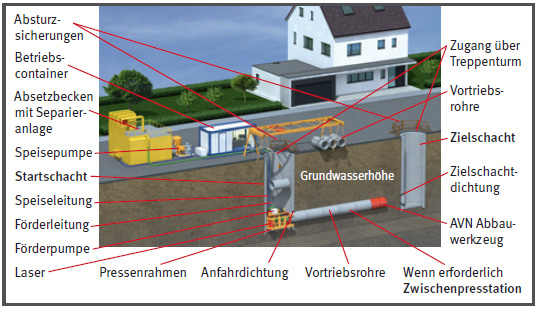
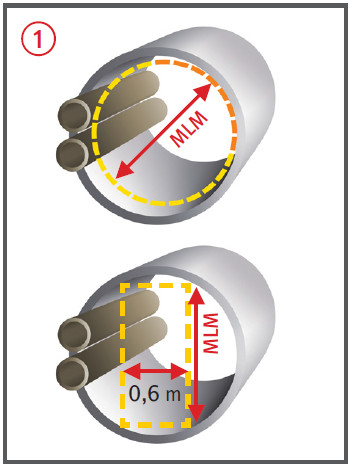

Gefährdungen
- Durch unkontrollierte Bewegungen von Teilen können
Personen gequetscht und getroffen werden.
- Durch unzureichende Belüftung kann es zu Gesundheitsschäden kommen.
Allgemeines
- Bei Rohrvortrieben unterscheidet man zwischen bemannten und unbemannten Verfahren.
- Die Arbeiten müssen
- von fachlich geeigneten Vorgesetzten geleitet werden,
- durch Aufsichtführende beaufsichtigt werden; diese müssen während der Arbeiten auf der Baustelle ständig anwesend sein.
- Grundsätzlich dürfen Rohrvortriebsarbeiten nicht von einer Person allein ausgeführt werden.
- Verbrennungsmotoren dürfen in Rohrvortrieben < 5 m2 Querschnitt nicht eingesetzt werden.
Arbeitsvorbereitung
- Vor Beginn der Arbeiten ist zu ermitteln, ob im vorgesehenen Arbeitsbereich Anlagen oder Stoffe vorhanden sind, durch die Personen gefährdet werden können, z. B.:
- erdverlegte Rohrleitungen und Kabel,
- Kampfmittel im Baugrund,
- Kanäle und Schächte, in denen Krankheitskeime oder explosionsfähige Atmosphäre vorhanden sind,
- Gefahrstoffe (Gase, Dämpfe, Stäube).
- Bei der Erstellung der Gefährdungsbeurteilung mögliche Störfälle (z. B. Vortriebshindernisse, Stopfer in Förderleitungen, Anschneiden von kontaminierten Bereichen) berücksichtigen.
- Betriebsanweisung erstellen.
Abbau an der Ortsbrust
- Abbau von Hand:
- erhebliche körperliche Belastungen der Beschäftigten durch dauernde Zwangshaltung/Zwangsstellung,
- Abbau in Rohren < 140 cm Innendurchmesser vermeiden.
- Mechanischer Abbau:
- Schrammgerät mit ergonomisch gestaltetem Arbeitsplatz ausrüsten,
- Geräte mit Not-Aus versehen,
- Bedienplatz gegen platzende Hydraulikschlauchleitungen schützen.
Schutzmaßnahmen
Start-/Zielschächte
- Start- und Zielschächte mit Absturzsicherungen ausstatten.
- Sicherer Zugang über Treppentürme.
- Arbeitsraumbreiten von mind. 60 cm einhalten.
- Beim Betrieb drehender Gestänge oder Schnecken ist durch technische Maßnahmen sicherzustellen, dass Personen nicht erfasst und verletzt werden können.
- Während des Hebezeugbetriebes dürfen Zugänge nicht benutzt werden und Arbeitsplätze in den Schächten nicht besetzt sein.
- Die Pressenwiderlagerkräfte bei der Dimensionierung der Widerlagerkonstruktion ausreichend beachten.
Press-Stationen
- Widerlager, Pressen, Verlängerungen und Druckring sind formschlüssig zu verbinden.
- Die Hydraulikanlage muss mit Überdruckventilen ausgerüstet sein.
- Zu Zwischenpress-Stationen und zur Ortsbrust muss eine sichere Sprechverbindung bestehen.

Tabelle 1
MLM
(mm) |
Rohrlänge
(m) |
Beseitigung von Störungen |
Inspektion
und Wartung |
Kontroll-
vermessungen |
Hindernis-
beseitigung |
| < 600 |
nicht zulässig |
nicht zulässig |
nicht zulässig |
nicht zulässig |
nicht zulässig |
| ≥ 600 bis < 800 |
bis 150 m |
zulässig |
nicht zulässig |
nicht zulässig |
nicht zulässig |
| ≥ 800 bis < 1000 |
bis 200 m |
zulässig |
zulässig |
nicht zulässig |
nicht zulässig |
| ≥ 1000 bis < 1200 |
bis 250 m |
zulässig |
zulässig |
zulässig1 |
nicht zulässig |
| ≥ 1200 bis < 1800 |
|
zulässig |
zulässig |
zulässig |
zulässig2 |
| ≥ 1800 |
|
zulässig |
zulässig |
zulässig |
zulässig |
1 nur wenn Sohle frei von Einbauten; 2 eingeschränkt möglich
Transporte/Lagerung
- Vertikaler Transport: Rohre und Abraum nur mit geeigneten Anschlagmitteln heben.
- Horizontaler Transport: Bei Ausfall der Förderung muss ein Vorbeiklettern an den Schutterwagen durch das Personal im Lichtraumprofil möglich sein.
- Bohrelemente und Rohre sind so zu lagern, dass sie gegen Abrollen und Abrutschen gesichert sind.
- Die Entnahme einzelner Elemente muss möglich sein, ohne die Stabilität des restlichen Lagers zu gefährden.
Personaleinsatz/Mindestlicht maße (MLM) 
- Wird Personal bei Rohrvortrieben im Rohrstrang oder in der Vortriebsmaschine eingesetzt, müssen in Abhängigkeit von der Vortriebslänge Mindestlichtmaße innerhalb des vorzupressenden Rohrstrangs eingehalten werden.
- Dabei wird zwischen ständigem Personaleinsatz bei bemannten und vorübergehendem Personaleinsatz bei unbemannten Verfahren unterschieden.
- Beim ständigen Personaleinsatz bemannter Vortriebsverfahren sind nachfolgende Mindestlichtmaße zu berücksichtigen:
| Rohrlänge |
MLM |
| < 50 m |
800 mm |
| < 100 m |
1000 mm |
| < 250 m |
1200 mm |
| < 500 m |
1400 mm |
| < 1000 m |
1600 mm |
| ≥ 1000 m |
1800 mm |
- Vorübergehender Personaleinsatz im Rohr bei unbemannt arbeitenden Verfahren nur unter den in Tabelle 1 genannten Bedingungen zulässig (Mindestlichtmaße in Abhängigkeit von der Vortriebslänge und den auszuführenden Arbeiten).
Zusätzliche Hinweise zur Belüftung
- An jeder Arbeitsstelle muss
ständig ein Sauerstoffgehalt von
mindestens 19 Vol.-% vorhanden
sein.
- Zulässige Konzentration von
Gefahrstoffen in der Atemluft darf nicht überschritten werden.
- Die Belüftung muss messtechnisch
auf Einhaltung der Grenzwerte überwacht werden.
- Der Förderstrom der Belüftung
muss mindestens 0,2 m/s betragen, bis 5 m2 Querschnitt 0,1 m/s.
Zusätzliche Hinweise zu elektrischen Anlagen
- Leuchten und ortsveränderliche
elektrische Betriebsmittel dürfen
nur mit Schutzkleinspannung,
Schutztrennung oder Fehlerstromschutzeinrichtung
(RCD) mit IΔN
≤ 30 mA betrieben werden.
- Sind in Schächten elektrisch
leitfähige Bereiche mit begrenzter Bewegungsfreiheit vorhanden,
sind weitergehende Schutzmaßnahmen
gegen die Einwirkung
gefährlicher elektrischer
Körperströme zu treffen.
- Bei Gefährdungen aufgrund
von Stromausfall Ersatzerzeuger mit ausreichender
Leistung vorsehen und in Bereitschaft halten.
- Stromerzeuger müssen außerhalb des Schachtes aufgestellt sein.
- Es muss eine Allgemeinbeleuchtung sowie eine Sicherheitsbeleuchtung vorhanden sein.
Zusätzliche Hinweise zur Notfallplanung
- Zu Arbeitsplätzen bei ständigem
und vorübergehendem
Personaleinsatz im Rohrstrang
eine sichere Sprechverbindung
vorsehen.
- Möglichkeit zur Bergung eines
Verletzten aus dem Rohrstrang
bzw. aus dem Steuerstand der
Schrammgeräte gewährleisten
(Durchschlupföffnungen mehr
als 60 x 45 cm an Vollschnittmaschinen).
- Rettungswege im Rohrstrang
sollten über eine ebene und
durchgehende Lauffläche verfügen.
- Die Rohrsohle frei von Material
und Aushub halten.
- Rettungsübungen gezielt durchführen, Selbstretter vorhalten.
07/2021